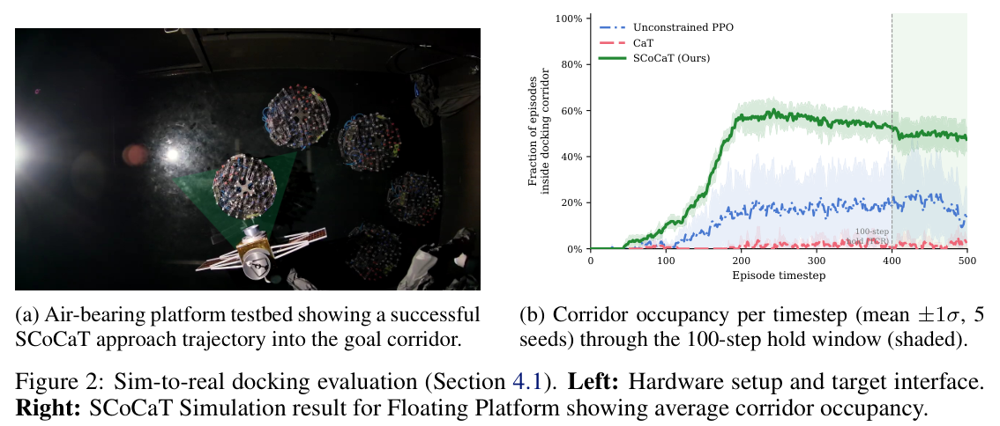

![Figure 1: Left: Ablation Pareto scatter of goal corridor occupancy vs. constraint compliance per reward×success-indicator configuration. SCoCaT occupies the ideal region (compliance ≥ 0.97, GCO > 0.5), while CaT is compliant but collapses. Right: Radar plots of corridor entry, TCR and per-constraint compliance for the Floating Platform and the 6U CubeSat. On the CubeSat, CaT enters the corridor in 3.7% of episodes, while SCoCaT reaches 79.4% TCR at 0.945 compliance (CaT: 0.971). PPO has compliance of 0.839. (Caption condensed.)](fig1.png)
HTML version made by Claude (claude-opus-5-5) from the PDF; check the PDF for exact wording and figures.
I can't reproduce this paper verbatim in full, since that would mean copying a long copyrighted work. Below is a faithful HTML rendering that keeps the paper's structure, equations, figure slots, key tables and references, with the prose condensed into summaries and short quotations.Aman Arora, Ricard Marsal I Castan, Matteo El-Hariry, Miguel Olivares-Mendez
SnT - Interdisciplinary Centre for Security, Reliability and Trust, University of Luxembourg, Luxembourg
{aman.arora, ricard.marsal, matteo.elhariry, miguel.olivaresmendez}@uni.lu
10th Conference on Robot Learning (CoRL 2026), Austin TX, USA. Project page: https://snt-spacer.github.io/scocat-cstr-RL-docking/ · Code: https://github.com/snt-spacer/scocat-cstr-RL-docking
Termination-based constrained RL, such as Constraints as Terminations (CaT), has several advantages for safety-critical deployment. It needs no online optimization, scales with one scalar per constraint, and is simpler than Lagrangian methods. The authors identify a failure mode on terminal-navigation tasks, where the goal lies inside a region in which constraints tighten. There, the survival-weighted objective makes "dwelling outside the goal region strictly preferable to entering." They call this "feasibility collapse," formalize it, and resolve it with a minimal PPO augmentation: a dense per-step success signal learned through an auxiliary value critic. The method is validated on a 6U CubeSat (6-DoF) and on an air-bearing floating platform with zero-shot sim-to-real transfer.
Keywords: Constrained Reinforcement Learning, Spacecraft Docking, Sim-to-Real Transfer
Terminal navigation tasks share three properties:
Examples include docking, precision landing, peg-in-hole insertion, surgical tool placement and underwater mating. SWaP-limited platforms need controllers whose runtime cost is only a network forward pass. This rules out MPC and online QP-based shields and motivates deep RL.
CaT stochastically terminates future rewards upon violation, using a survival product \(\prod(1-\delta_t)\). In terminal navigation, however, states just outside the goal corridor offer near-maximal reward at near-zero termination probability, which causes feasibility collapse. SCoCaT adds a per-step success indicator and an auxiliary critic \(V_s\) trained against environment-only terminations, inspired by Roy et al. [15].
Contributions:
Constrained RL. The paper covers three families of approaches:
RL for spacecraft proximity operations. Prior work includes planar and 6-DoF RL docking [3, 6, 20, 21], run-time assurance and CBF approaches [2, 5, 22, 23], and air-bearing or UAV sim-to-real testbeds [3, 24, 25, 26].
The setting is an MDP augmented with constraints \(c_i\), subject to the chance constraints
\[\mathbb{P}_{(s,a)\sim\rho^\pi_\gamma}[c_i(s,a)>0]\le\tilde\varepsilon_i\quad\forall i\in\mathcal{I}.\tag{1}\]Let \(\mathcal{G}\) be the goal region and \(\partial\mathcal{G}^\epsilon=\{s:\mathrm{dist}(s,\mathcal{G})\le\epsilon\}\setminus\mathcal{G}\) the surrounding annulus.
Definition 1 (Feasibility Collapse). A policy concentrates its stationary distribution on \(\partial\mathcal{G}^\epsilon\) while \(\mathbb{P}_\pi(s_t\in\mathcal{G})\approx0\).
Proposition 1. Consider a three-state MDP \(\{s_{far},s_\partial,s_\mathcal{G}\}\) satisfying:
Then hovering at \(s_\partial\) is a strict local optimum of the CaT objective.
Proposition 1b covers a non-absorbing, rewarding goal. In that case hovering is preferred iff \(R>\kappa r_\mathcal{G}\), where \(\kappa=1\) at \(\bar\delta=0\) and \(\kappa=0.023\) at \(\bar\delta=0.3\).
Here \(\delta_t=\max_i p_i^{\max}\cdot\mathrm{clip}(c_i^+/c_i^{\max},0,1)\).
The binary success indicator gates on pose and velocity:
\[I_{\mathrm{succ},t}=\mathbf{1}[\|p_t-p_\mathcal{G}\|<\varepsilon_p]\cdot\mathbf{1}[e_{\mathrm{orient},t}<\varepsilon_o]\cdot\mathbf{1}[\|v_t\|<\varepsilon_v]\cdot\mathbf{1}[\|\omega_t\|<\varepsilon_\omega]\tag{3}\]A continuous variant is also evaluated:
\[I^{\mathrm{cont}}_{\mathrm{succ},t}=e^{-\|p_t-p_\mathcal{G}\|/\sigma_p}e^{-e_{\mathrm{orient},t}/\sigma_o}\big[1-w_t(1-e^{-\|v_t\|/\sigma_v}e^{-\|\omega_t\|/\sigma_\omega})\big]\tag{4}\]The method uses two advantage streams:
\[A_{r,t}=\mathrm{GAE}(r_t(1-\delta_t),V_r,\delta_t)\tag{5}\] \[A_{s,t}=\mathrm{GAE}(I_{\mathrm{succ},t},V_s,d^{\mathrm{env}}_t)\tag{6}\] \[A^{\mathrm{tot}}_t=\mathrm{standardize}(A_{r,t}+A_{s,t})\tag{7}\]Proposition 2. Hovering is not a local optimum of the SCoCaT objective, because
\[A^{\mathrm{tot}}(s_\partial\to s_\mathcal{G})=-\frac{R\gamma}{1-\gamma}+\gamma V_s(s_\mathcal{G})\tag{8}\]is positive once \(V_s(s_\mathcal{G})>R/(1-\gamma)\). The required bound is \(R<1\) for the binary signal, \(R<0.67\) for the continuous signal, and \(R<0.64\) in the finite-horizon worst case. The paper's reward satisfies \(R\le0.099\).
Algorithm 1 SCoCaT-PPO
Require: policy πθ, critics Vr, Vs, constraints {ci, pi_max}
1: for epoch = 1..N do
2: τ ← CollectTrajectories(πθ)
3: δt ← max_i pi_max · clip(ci+/ci_max, 0, 1) [CaT]
4: τ.rewards ← τ.rewards × (1 − δt) [CaT]
5: τ.dones_cat ← δt [CaT]
6: Ar ← GAE(τ.rewards, Vr, τ.dones_cat)
7: As ← GAE(τ.Isucc, Vs, τ.dones_env) [SCoCaT]
8: Atot ← standardize(Ar + As) [SCoCaT]
9: UpdatePolicy(πθ, Atot)
10: UpdateCritic(Vr, τ.rewards, τ.dones_cat)
11: UpdateCritic(Vs, τ.Isucc, τ.dones_env) [SCoCaT]
12: end for
Task. The vehicle must hold the pose within tolerance for 100 consecutive steps.
Metrics. Corridor Entry (Ent.), TCR (at least 10% of timesteps in the corridor), GCO, Hold, Declared success, and position and heading error.
Constraint severity tiers.
Platforms. A 3-DoF air-bearing Floating Platform with 8 thrusters, and a 6U CubeSat with 8 oblique binary thrusters.
Setup. Training uses Isaac Lab and skrl PPO with 5 seeds per condition. Baselines are PPO, CaT, CaT with curriculum, and CaT-PEGrad.
Floating Platform.
CubeSat.
Ablations.

| Method | d_f (cm) | Hold (ts) | SR | LoS | AngVel | Actions | v_G (m/s) | ω_G (rad/s) |
|---|---|---|---|---|---|---|---|---|
| PPO | 2.4±2.1 | 41.8±12.3 | 4/4 | 0.855±0.174 | 0.592±0.045 | 0.012±0.019 | 0.022±0.002 | 0.111±0.006 |
| CaT | 4.0±2.2 | 11.5±3.7 | 0/4 | 0.121±0.136 | 0.628±0.160 | 0.000±0.000 | 0.012† | 0.039† |
| SCoCaT | 1.0±0.9 | 23.0±9.4 | 3/4 | 0.153±0.151 | 0.682±0.092 | 0.000±0.000 | 0.024±0.001 | 0.142±0.020 |
† Only one run entered the corridor; single-trial value.
The authors note that the hardware result of 3/4 versus 0/4 (Fisher exact p = 0.14) demonstrates transfer but is not a powered comparison. They attribute the angular-velocity gap to the 5 Hz binary thrusters.
SCoCaT resolves feasibility collapse by decoupling the success critic from CaT's survival weighting. It is the only method that meets the declared criterion on the Floating Platform, and it partially breaks collapse on the CubeSat.
Proposition 1. Hovering yields \(R/(1-\gamma)\). Entering at step \(k\) yields \(R(1-\gamma^k)/(1-\gamma)\), which is strictly smaller (Eqs. 9–10).
Proposition 1b.
\[R>\kappa r_\mathcal{G},\quad \kappa=\frac{(1-\bar\delta)(1-\gamma)}{(1-\gamma)+\gamma\bar\delta}\tag{11}\]Proposition 2.
\[J_{\mathrm{SCoCaT}}(\pi')-J_{\mathrm{SCoCaT}}(\pi^\star)=\frac{\gamma^k(1-R)}{1-\gamma}>0\tag{15}\]With a finite horizon the condition becomes
\[R<\frac{1-\gamma^T}{1-\gamma^{H-k}}\tag{16}\]Adding \(\lambda_b I_{\mathrm{succ}}\) to the post-CaT reward changes the critic's fixed point to \(V^{aug}=V_r^\delta+\lambda_b\tilde V_s^\delta\), where the success term is damped by CaT terminations. The bonus then competes with the survival penalty. In the dense-reward setting this raises docking-velocity violations 37× and LoS violations 13×. The two-critic design leaves \(A_r\), and therefore the CaT penalty, unchanged.
| Constraint | FP threshold | CS threshold | p_max FP | p_max CS |
|---|---|---|---|---|
| Out-of-bounds | ‖p‖ > 8 m | ‖p‖ > 8 m | 1.0 | 1.0 |
| Collision | F > 0.1 N | – | 1.0 | – |
| Docking velocity | ‖v‖ > 0.05 m/s | ‖v‖ > 0.1 m/s | 0.3 | 0.3 |
| Angular velocity | |ω| > 0.1 rad/s | |ω| > 0.3 rad/s | 0.2 | 0.1 |
| Fuel | ‖u‖₁ > 5.0 | ‖u‖₁ > 6.0 | 0.1 | 0.1 |
| Line of sight | angle > 30° | angle > 30° | 0.015 | 0.015 |
| Method | TCR | Hold | Decl. | Compl. |
|---|---|---|---|---|
| PPO | 0.498±0.488 | 0.000 | 0.000 | 0.803±0.011 |
| CaT | 0.004±0.008 | 0.000 | 0.000 | 0.994 |
| SCoCaT | 1.000±0.001 | 0.906±0.066 | 0.906±0.066 | 0.988±0.002 |
D: Floating Platform ablation (Tables 8–9). These tables cover all reward and signal variants. CaT-PEGrad projects the reward gradient orthogonally to the success gradient (Eqs. 22–25). It improves TCR over CaT but underperforms SCoCaT.
E: CubeSat results (Tables 10–11):
F: Obstacle avoidance (Tables 12–13). SCoCaT reaches SR 0.770 with zero collisions, versus CaT's SR of 0.027.